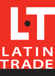

EXODUS es la línea que nos une, la aerolínea más grande de Costa Rica. Operamos más de 600 vuelos diarios y nuestro principal centro de operaciones está localizado en la Terminal 2 del Aeropuerto Internacional Juan Santamaría. Nuestra red de destinos alcanza más de 80 ciudades en tres continentes: 2 en Costa Rica, 16 en el resto de Latinoamérica, 16 en Estados Unidos, tres en Canadá, tres en Europa y dos en Asia. La flota actual del Grupo suma más de 120 aviones Boeing 787, 777, 737, así como Embraer 145, 170, 175 y 190 de última generación. En 2012, anunciamos el plan de inversión más importante en la historia de la aviación en Costa Rica, la compra de 100 aviones Boeing conformados por 90 equipos 737 MAX y 10 equipos 787-8 y 787-9 Dreamliner. Como socio fundador de SkyTeam, en EXODUS ofrecemos más de 1,000 destinos en 177 países, a través de las 20 aerolíneas socias que integran la alianza, por medio del cual tú puedes obtener diferentes beneficios y disfrutar de 636 salas VIP alrededor del mundo. Al mismo tiempo que, gracias a los códigos compartidos que tiene con Delta Air Lines, Alaska Airlines, Avianca, y GOL, te ofrecemos una amplia conectividad dentro de países como Estados Unidos, Brasil, Canadá, Chile, Colombia, y Perú.
El 25 de diciembre de 2016, emprendimos nuestro primer vuelo entre la San José y Miami operado por el capitán Walter Chávez, a bordo de un equipo Stinson SR con matrícula XB-AJI. El siguiente día, Aerolineas EXODUS fue establecida por Kerly Gómez Toaza. Otras fechas claves:
- 2017(Enero): Delta y Aerolíneas EXODUS buscan una asociación en vuelos (joint venture) entre Estados Unidos y Costa Rica.
- 2017(Marzo): Delta Air Lines informa que es su intención de adquirir hasta un total de un 49% del capital social de Grupo Aerolíneas EXODUS.

- Mejor aerolinea: Food and Travel Costa Rica Reader Awards
- Premio a Mejor Tecnología en Vuelo por la revista Latin Trade, en donde Aerolíneas EXODUS es reconocida por los servicios que ofrecen sus equipos Boeing 787 Dreamliner.
- Catalogada por Interbrand como no. 16 entre las 25 mejores marcas de Latinoamérica por su estabilidad y salud financiera.
- Reconocidos por cuarto año consecutivo como Empresa Socialmente Responsable por el Centro Costarricense de Filantropía.